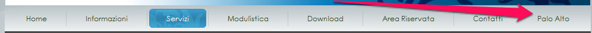

Una volta cliccato sul segnalibro, apparira' una nuova voce di menu come mostrato in figura
La prima volta che si usa lo script verra' richiesto di inserire su quale/i sottoclasse/i si vuole filtrare, ad esempio 192.168.10 (non specificare l'ultimo ottetto altrimenti si filtra per IP puntuale)
La scelta viene memorizzata sul browser per cui non dovra' piu' essere specificata (a meno di cancellare la cache)
Successivamente sara' sufficiente visitare la pagina palo alto, cliccare sul bookmarklet e vedere la lista contenente i soli IP afferenti alla scelta fatta
Nota tecnica: Le impostazioni vengono salvare sul localStorage, se sono attive estensioni o plugin che ne impediscono l'uso allora le sottoclassi verranno richieste ogni volta